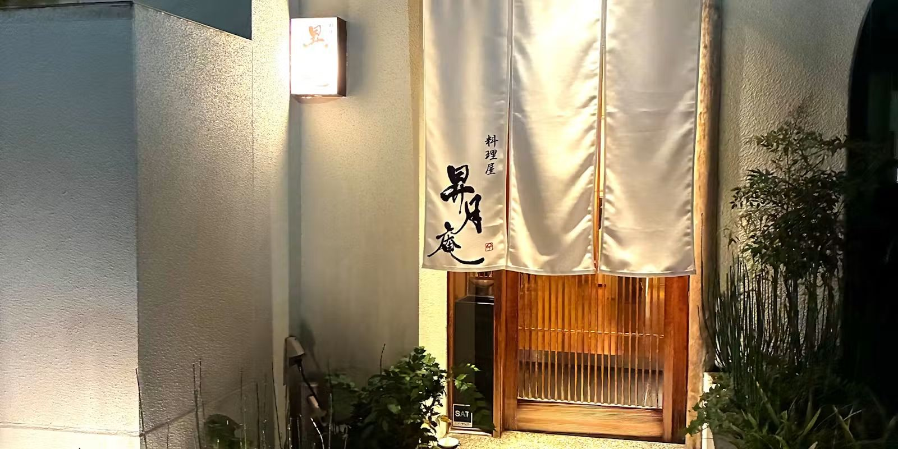
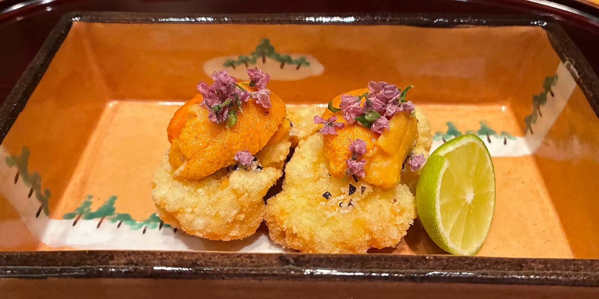
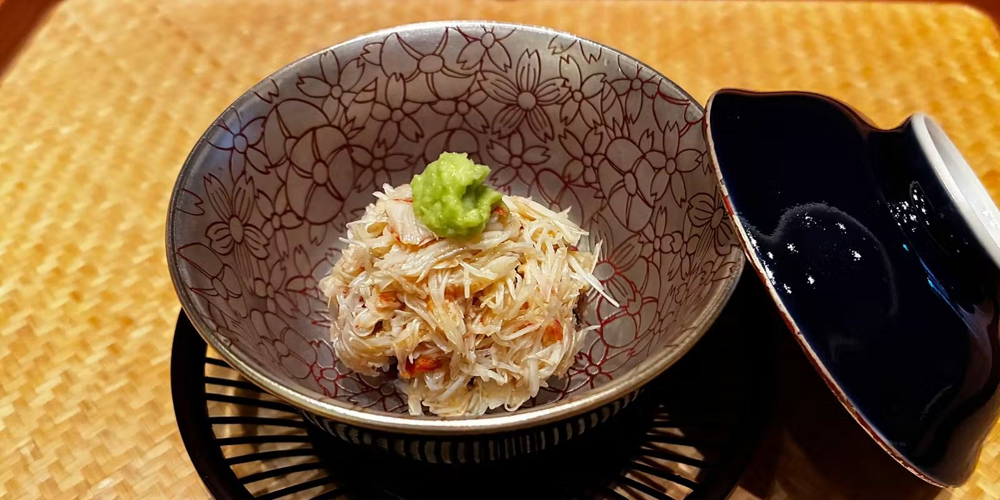
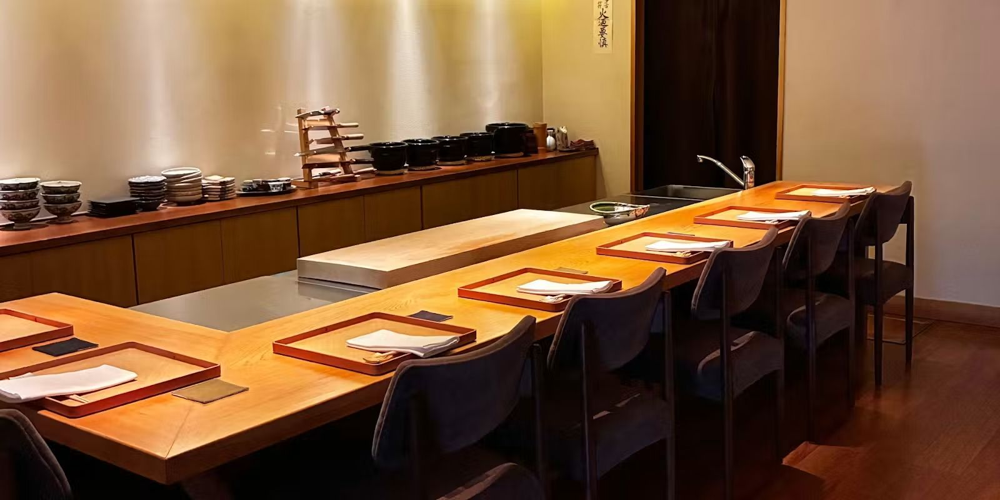
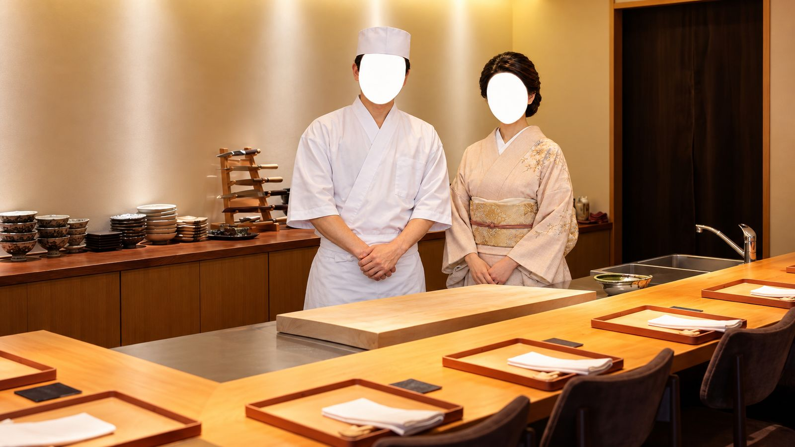
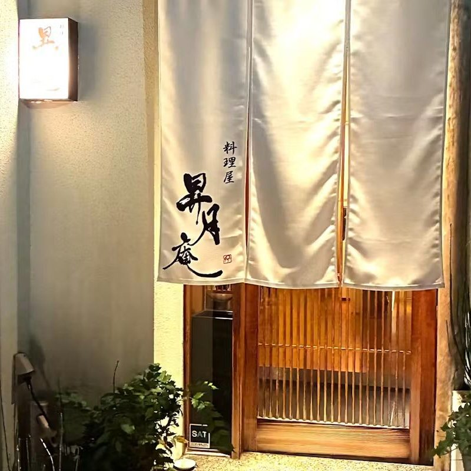

Ryoriya Shogetsuan
At six in the evening, the noren goes up.
Welcome
From dusk until the moon rises.
Shogetsuan is a small restaurant where you spend those hours at the counter.
Once you step through the noren, leave the rest to us.
The chef and the okami
Omakase

There is one menu: the omakase course.
Around ten dishes, built on seafood from the Seto Inland Sea and the seasons of Hiroshima.
Rather than lining up costly ingredients, the chef builds each dish by layering one ingredient’s character onto another’s.
Our signature is a seasonal rice dish, cooked in the pot with rice grown in Sera, Hiroshima.
Omakase course
¥21,780 (tax included, no service charge)
The menu and price may change with what the market offers.
Vessel and plating

Vessels are chosen for the food, and the plating for the vessel.
When the lid comes off, the painting on the bowl and the food in it should read as one scene.
The counter

Inside the noren, seven seats at a plain wooden counter, and no more.
You sit facing the chef across the cutting board. Each dish is finished in front of you and served on the spot. Reservations only.
To book the whole counter for a private party, please call us.
The kitchen
Not leaning on costly ingredients, but layering one ingredient's character onto another's to build each dish.

Chef
The chef trained at a Michelin-starred Japanese restaurant in Tokyo before opening Shogetsuan in Hiroshima.
Okami
She welcomes you and looks after you at the counter.
Reservations
Reservations are taken by phone or through our booking site.
Omakase course ¥21,780 (tax included, no service charge)
Before you book, please read the following.
ArrivalPlease arrive 5 minutes before your reservation time. If you are late without letting us know, your reservation will be cancelled automatically.
CancellationCancellations made the day before are charged at 50% of the course price, and on the day at 100%.
Dress codeSmart casual. Please do not come in T-shirts, shorts or sandals.
AllergiesPlease tell us about any allergies or ingredients you do not eat when you book. If the list is long, we may not be able to accommodate you.
ChildrenChildren are welcome only when the restaurant is booked for a private party, and only if they can enjoy the same course as adults.
FragrancePlease avoid strong perfume and fabric-softener scents, so they do not mask the aromas of the food.
PhotographyYou are welcome to take photographs. Please make sure the faces of other guests and our staff are not in the frame.
Getting here

- Address
- 3-6 Komachi, Naka-ku, Hiroshima 730-0041, Japan
In Japanese, to show a taxi driver:
〒730-0041 広島県広島市中区小町3-6
料理屋 昇月庵 - Nearest stop
- About two minutes on foot from Chuden-mae tram stop (Hiroden Ujina Line)
- Hours
- 6:00 pm – 11:00 pm (last order 9:00 pm)
- Closed
- Sundays and national holidays
We occasionally open or close on other days. - Seating
- Seven counter seats, reservations only
- Payment
- Cash, VISA, JCB, AMEX, Diners
QR code payments are not accepted. - Telephone
- 082-259-3098